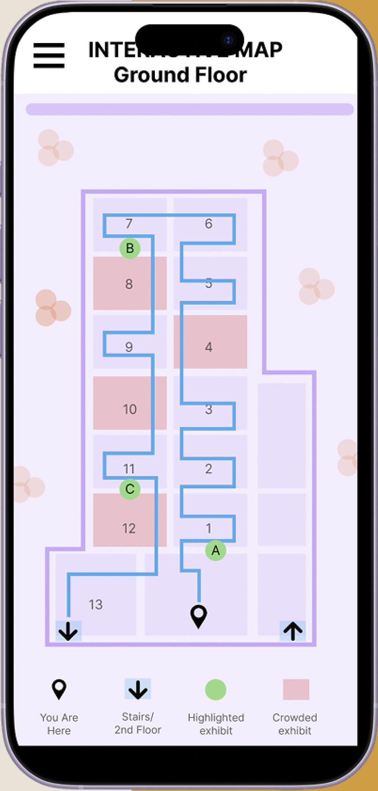
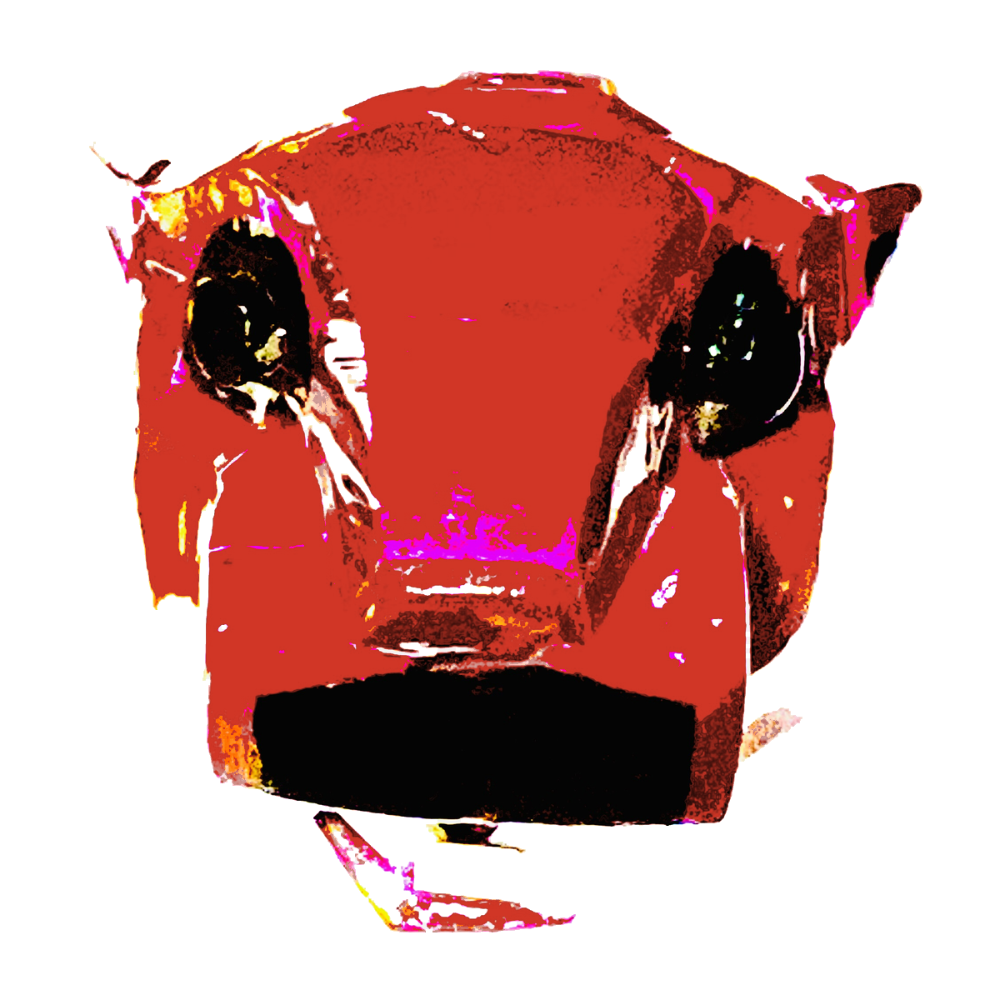
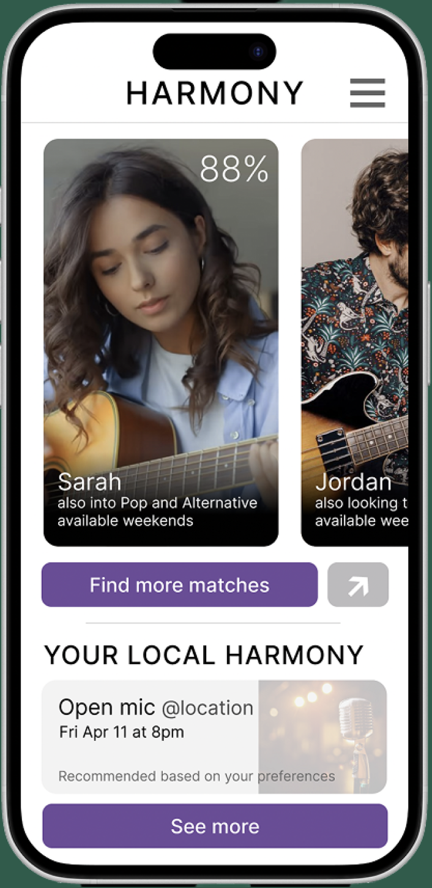
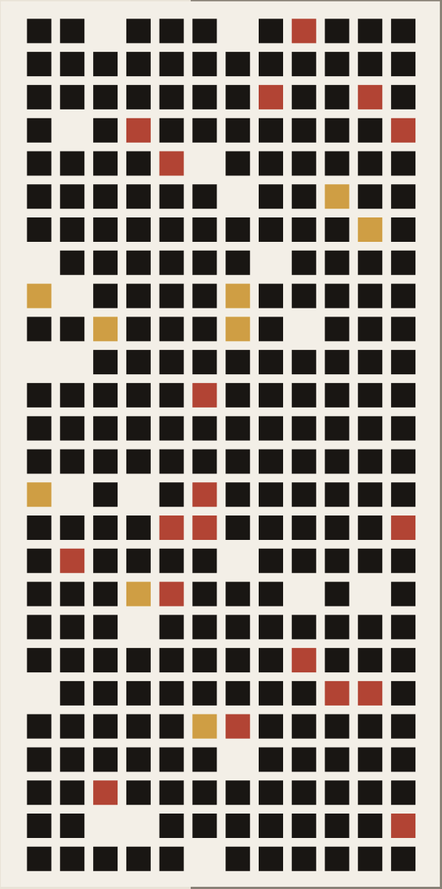
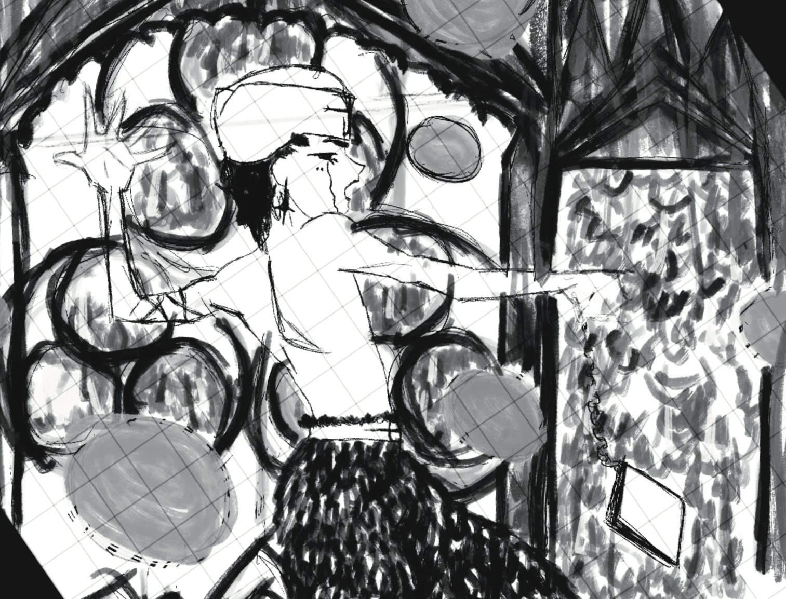

Mobile / Research-Led
Turning a disorienting museum visit into a guided one
Herakify
- User Research
- Interaction Design
- Prototyping
I use storytelling to design products and media that inspire a better future.


Mobile / Research-Led
Herakify

Mobile / Multi-Screen
Harmony

Enterprise / Engineering
Yakabod

Animation / Illustration
Multimedia
I'm a product designer based in Washington, DC with a background in traditional computer science and programming. Through my course work I've come to have a deep understanding of storytelling and human-centered design.
My focus is on understanding products and consumers, in order to create designs which live and breathe their stories.
My passion for design extends to my everyday life in which I explore nature, watch films/tv, and draw in a variety of mediums.